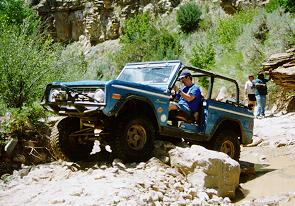
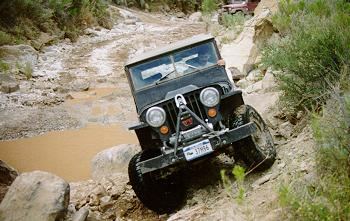
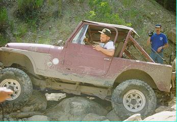

21 Road 7/98
July 4, 1998
by Dave Vest (Mud Dancer)

Five vehicles departed camp for the trek up Road 21. Dave with Troy
lead the way followed by Ray with Bob, Paul and Cindy, Jacob with Tess,
and Terry and Diane.

As advertised, the road was paved, then turned to gravel, and finally
to dirt. We arrived at the first turn into the creek bed where we
aired down and dialed in. After dropping into the creek bed, the fun
began with obstacle after obstacle ranging form easy to hard. Everyone
did well, with some choosing the easier lines and others the hardest
they could find. We stopped for lunch in the shade of an overhang
not knowing how far it was to the infamous "CAVE". After lunch, on
one of the obstacles, Terry managed to high center himself, so after
applying the use of his high lift jack and some judicial rock stacking,
he was freed and we continued. Then Ray managed to do the same thing
a little farther down the trail. While he was in his hung-up position,
we discovered the cap to one of his front axle u-joints had lost it's
c-clip and was about to fall out. Ray put some duct tape around it
and went to two wheel drive. We then un-hung him with the aid of
Jacob's winch. It was then discovered that we were only a few hundred
yards from the "CAVE", so Ray took the by-pass and we regrouped there.
What a relief from the heat. I think we all could have stayed there a
few hours. Immediately after exiting the "CAVE", we came to an obstacle
called Carnage Corner. I and Terry successfully navigated through
it, with Paul and Jacob opting to go around. Since it was only a short
way to the Rock Garden from there, Ray left his Bronco and proceeded
on foot while the rest of us went to what looked like the turn around
point. After hiking up the trail a ways, we say that there were a
few hundred yards of trail left and also met a bunch of Jeeps that
 were getting ready to head back down. Paul and Ray decided to head
back out using the by-pass road. I, Terry, and Jacob decided to finish
the trail. After all the Jeeps passed, we headed on up the trail.
After a few obstacles, Terry somehow got his Jeep tweaked and it protested
by its fan trying to eat its radiator. After un-tweaking him and a
little fixing of the radiator, we continued. Another couple hundred
yards and we climbed out of the creek bed and onto the road out. It
had to be one of the dustiest, longest roads around. In the future
it would be much better to turn around and go out the way we went in.
Anyway, we eventually made it back to camp.
were getting ready to head back down. Paul and Ray decided to head
back out using the by-pass road. I, Terry, and Jacob decided to finish
the trail. After all the Jeeps passed, we headed on up the trail.
After a few obstacles, Terry somehow got his Jeep tweaked and it protested
by its fan trying to eat its radiator. After un-tweaking him and a
little fixing of the radiator, we continued. Another couple hundred
yards and we climbed out of the creek bed and onto the road out. It
had to be one of the dustiest, longest roads around. In the future
it would be much better to turn around and go out the way we went in.
Anyway, we eventually made it back to camp.
I think everyone found Road 21 a great trail and we will definitely
have to do it again. Next time, spring or fall, when it is cooler
seems a little more appealing.
